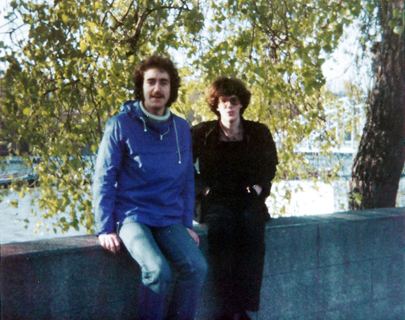
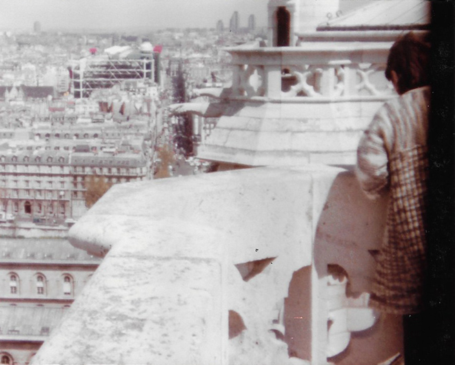
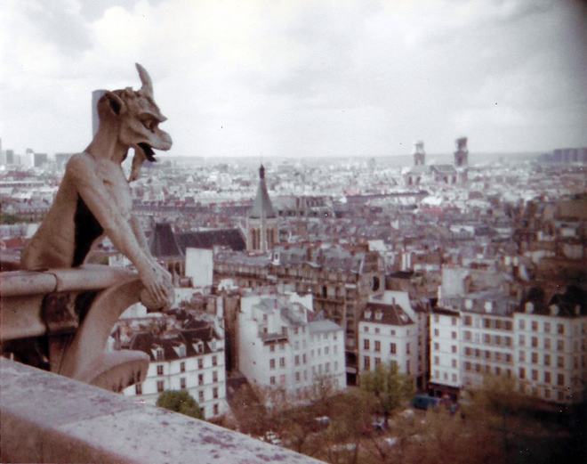
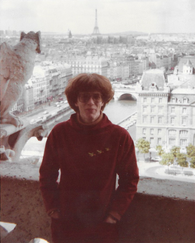
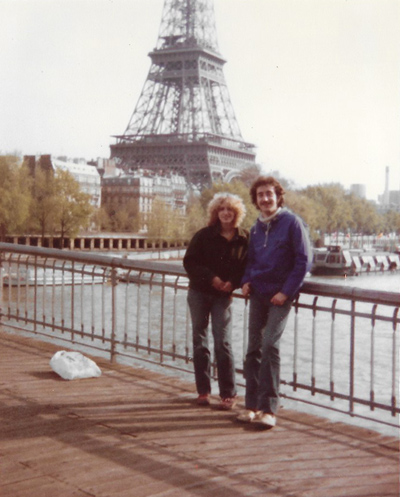
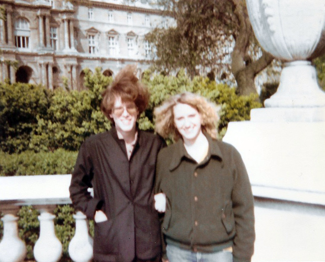
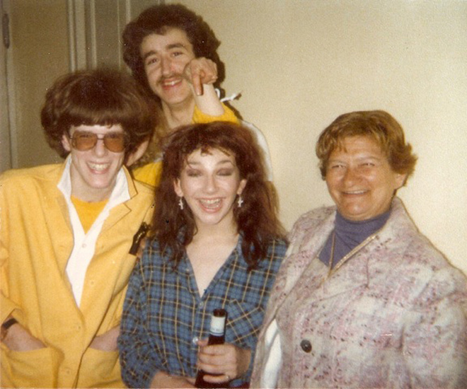

My first visit to Paris. Having been to see Kate Bush perform at the London Palladium and blagging our way into a back-stage party, we met her and were invited to come to see her perform at the Theatre des Champs-Élysées. My old school friend Jonathan and I went over to France with Louise, whom we had met at the Palladium concerts.

The view from Notre-Dame Cathedral was impressive - the Pompidou Centre one way (above) and the Église Saint-Sulpice the other (below).




